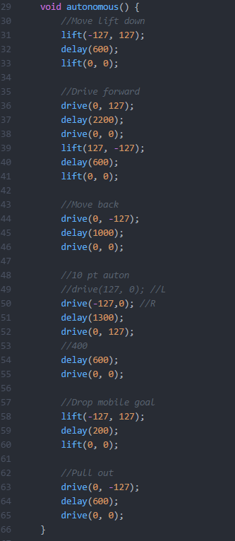
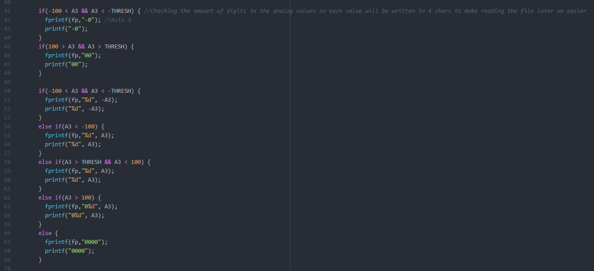

I was apart of writing the code for competition. I wrote the operator control code and helped with the timed-auton code.
These are the movement functions of our robot
This is the timed autonomous code used in competition. I worked on tweaking the delay values with trial and error.
I worked on an autonomous recorder. The auton recorder would record the controller inputs for every millisecond as we moved the robot for up to 15 seconds into a text file. Then, to replay the recorded movements, the auton replayer can be called to read each input for that millisecond every millisecond into a char array. The values in this array would then be turned into ints and used in our operator control functions to replay the movements of the robot.
This is the autonomous recorder. It writes the controller inputs every 20 milliseconds into a text file as you move the robot for up to 15 seconds.
This is the autonomous replayer. It reads the controller values that were previously written into a text file every 20 milliseconds and sends them into the movement functions so the robot will replay the recorded movements.
For community events, I used the vex speaker functions to code music onto our robot. This was useful for events such as the Greenbrook Technology Night and the Monroe Public Library Maker Faire, where we let kids play with our robot.
These are the music functions. There is a function, play, that takes in pointers to the functions that play music and creates a task that runs those functions so that the robot can move while it plays the music.